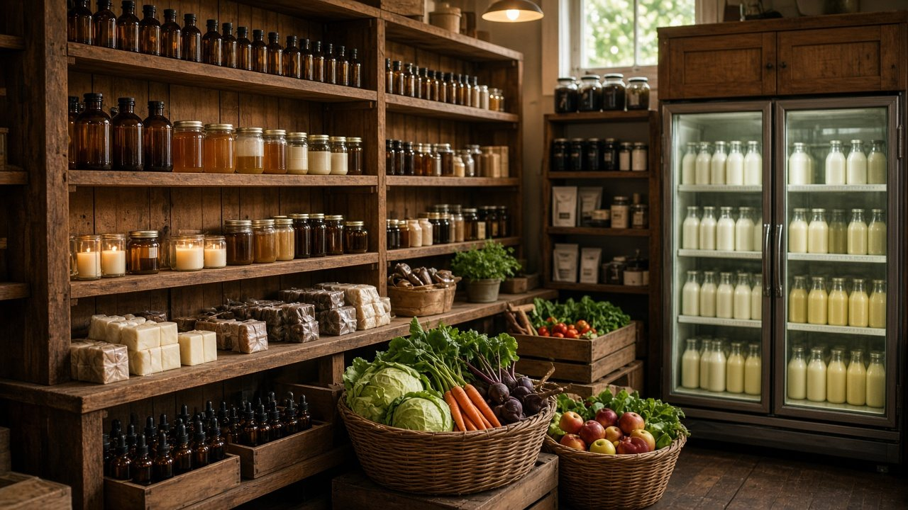

Local grocery + natural market. Seasonal produce, local meats, raw milk and dairy, locally made cheeses and natural goods, sourced from local and regional farms. Open 7 days.
Shop in store or curbside
Sample photoWhat's on the shelves:
Farmacy sources from more than 70 local and regional farms, and is a retail partner for Milky Way Farm, a South Carolina dairy.
“literally farm to table shopping”NEXTDOOR NEIGHBORS
Come browse the shelves at 508 S B St.
Ask about curbside pickup when you order.
LOCAL FARMS“This is a great place to get things from lots of local farms.”
GOOGLE · NOV 2026
FIRST VISIT“I was skeptical, because I have always driven by and didn’t know a thing about them! Honestly so glad I stopped today! Got some quality goods, and the customer service was top tier! Thanks so much!”
GOOGLE · OCT 2026
CHOCOLATE MILK“Great place to stop in for snacks and food, they have the best chocolate milk I’ve ever had in my life.”
GOOGLE · OCT 2026
ELDERBERRY“Good place to get elderberry syrup”
NEXTDOOR · NOV 2022
4.7 on Google (229 reviews) · 5.0 on Yelp (10 reviews) · 75 Nextdoor recommendations